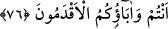
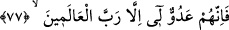

76. İster siz, ister eski atalarınız.
“İster siz, ister eski” önceki “atalarınız” hakkıyla baktınız ve bildiniz mi? Çünkü
bâtıl, fâillerinin çokluğuyla ve eski bir âdet/alışkanlık olmakla hakka inkılab etmez.
77. İyi bilin ki onlar benim düşmanımdır; ancak âlemlerin Rabbi (benim
dostumdur);
“İyi bilin ki onlar benim düşmanımdır;”
Onların bu hususu bilmediklerine dikkat çekildikten sonra bu cümlede onların
taptıkları şeylerin durumu açıklanmaktadır. Yâni siz o putlara bakıp düşünmediniz ve
hallerine vâkıf olmadınız. O halde iyi bilin ki putlar kendilerine tapınan kimselerin
düşmanıdırlar. Çünkü onlar bir kimsenin düşmanından gördüğü zarardan daha fazla o
putlardan zarar görürler.
Putlar cansız varlıklar olduğu halde istiâre yoluyla “düşmanlar” diye
isimlendirilmiştir. İbrâhim (a.s.) onlara târizde bulunmak için ‘sizin değil benim
düşmanımdır’ diyerek durumu kendisine nisbet etmiştir. Çünkü nasîhatta târizde
bulunmak/kinayeli konuşmak, açık söylemekten daha etkilidir. Yine sözünün bir nasîhat
olduğunu hissettirmek için kendisinden başlamıştır ki, nasîhatı kabûle daha elverişli
olsun.
Ferrâ der ki: “Bu ifâde ters döndürülmüş/maklûb bir ifâdedir. “Ben onların
düşmanıyım.” demektir. Çünkü sen kime düşman olursan o da sana düşman olur.”
“Ancak âlemlerin Rabbi (benim dostumdur);” Yâni âlemlerin Rabbi böyle değildir.
Bilakis O benim dünyada ve âhirette dostumdur. Durmadan dünya ve âhiretin
nimetlerini fazlından bana bol bol verir.
Büyüklerden birisi der ki: “Halîlullâh İbrâhim (a.s.), kendisini bulunduğu
hullet/dostluk makamında gördü. Bulunduğu hali yönünden kendi zamanında sözünü
dinleyecek eşi ve benzeri kimse yoktu. Bu yüzden kendisiyle bütün insanlar arasında
düşmanlık meydana geldi.
Yine bu, onun muhabbetteki kemâline işarettir. Çünkü Hak’tan başka onun sohbet ve
muhabbetine lâyık kimse yoktu. Semnûn der ki: “Mahbûb’una muhabbeti ve mâsivâdan
kesilerek Hakk’a dönüşü sahih olana kadar mükevvenâta ve içindekilere düşman